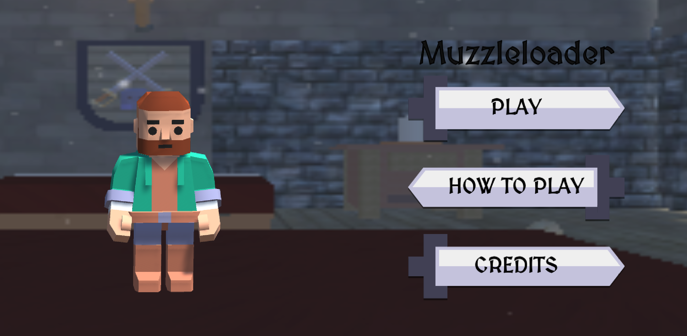
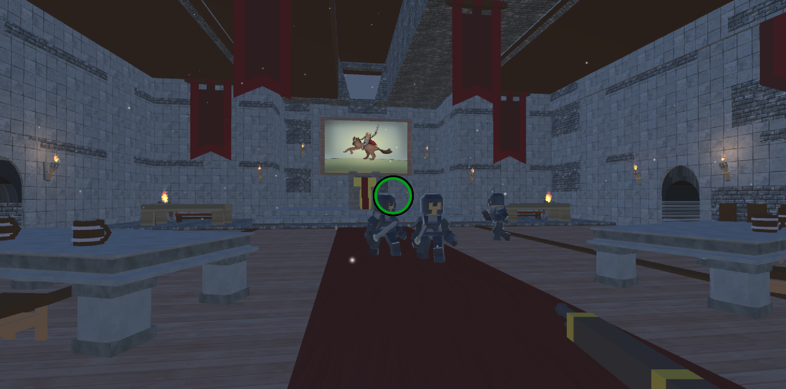
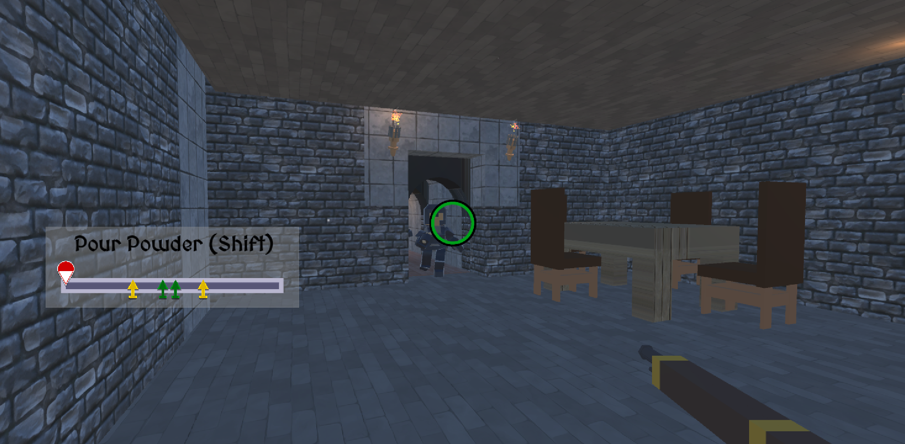

Muzzleloader was a class project Unity game made for MAGD 372 - Intermediate Game Design at University of Wisconsin - Whitewater.
The game is a first person shooter game where the player is armed with a muzzleloader rifle. The player only has one bullet before they must perform a complicated reloading process involving several key presses.
I was responsible for programming work in this project including handling game inputs, as well as work using Unity to apply colliders to the game's levels.
  